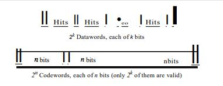
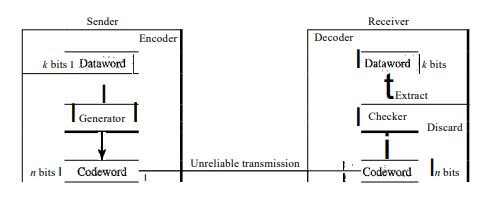
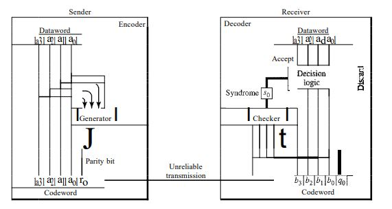
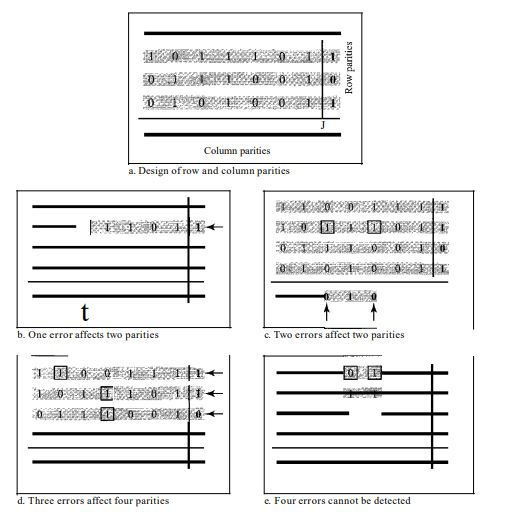
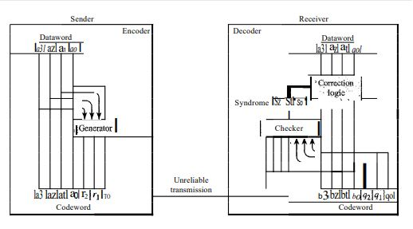
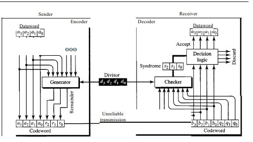

## <h3>Capitulo 10: Deteccion y correcion de errores</h3> <section> <h4></h4> <h4>Rafael Bello Rangel</h4> <h5>Maestro: ISMAEL JIMÉNEZ SÁNCHEZ</h5> <h5>Materia: Telecomunicaciones</h5> </section> --- ## Deteccion vs correcion <p style="font-size:3.5vh">La detección de errores es un proceso más sencillo que la corrección. En la detección, solo buscamos saber si ha ocurrido algún error, lo cual se puede responder con un simple "sí" o "no", sin importar la cantidad de errores. Un error de un solo bit se trata de la misma manera que un error de ráfaga</p> <p style="font-size:3.5vh">Por otro lado, la corrección de errores es más compleja, ya que necesitamos identificar tanto el número de bits corruptos como su ubicación en el mensaje. La cantidad de errores y el tamaño del mensaje son factores clave; por ejemplo, al corregir un solo error en una unidad de datos de 8 bits, debemos considerar ocho posibles ubicaciones. Si hay dos errores, las posibilidades aumentan a 28. Esto se vuelve aún más complicado si se intentan localizar múltiples errores en unidades de datos más grandes</p> --- ## Redundancia <p style="font-size:3.5vh">Consiste en enviar bits adicionales junto con los datos, los cuales son añadidos por el emisor y eliminados por el receptor. Estos bits redundantes permiten al receptor identificar o corregir bits corruptos</p> --- ## Correcion de errores en avance vs Correcion por retransmision <p style="font-size:3.5vh">La corrección de errores hacia adelante es un proceso en el que el receptor intenta adivinar el mensaje utilizando los bits redundantes, lo cual es posible si el número de errores es pequeño</p> <p style="font-size:3.5vh">La corrección por retransmisión es una técnica en la que el receptor detecta un error y solicita al emisor que reenvíe el mensaje. Este proceso de reenvío se repite hasta que el receptor considera que ha recibido un mensaje libre de errores, aunque no todos los errores pueden ser detectados</p> --- ## Codificacion <p >La codificación introduce redundancia mediante esquemas que crean relaciones entre bits redundantes y bits de datos. Esto permite al receptor detectar o corregir errores al verificar estas relaciones. Los esquemas de codificación se dividen en dos categorías principales: codificación en bloques y codificación por convolución, con un enfoque particular en la codificación en bloques</p> --- ## Estructura de Codificacion y decodificacion <img src="./imagenes/codi.JPG" style="border-radius: 8px;"> --- ## Aritmetica Modular y Modulo-2 <p style="font-size:3.5vh">La aritmética modular, se utiliza con un rango limitado de enteros definidos por un límite superior, llamado módulo N, Solo se consideran enteros de 0 a N-1. Por ejemplo, con un módulo de 12, solo se utilizan los números del 0 al 11</p> <p style="font-size:3.5vh">La aritmética módulo-2 es de particular interés, ya que utiliza un módulo N, Nde 2, lo que significa que solo se emplean los números 0 y 1. Las operaciones en esta aritmética son muy simples.</p> --- ## Codificacion por bloques --- ## <div style="display: flex; align-items: center; justify-content: space-between; font-size: 3.5vh; "> <div style="width: 45%; padding-right: 20px;"> <p style="font-size:5vh">La codificación por bloques convierte bloques de mensaje (datawords) en palabras de código (codewords) añadiendo bits extra para detectar o corregir errores. Solo algunas combinaciones de palabras de código son válidas, lo que permite identificar y manejar errores en la transmisión</p> </div> <div style="width: 50%; text-align: left;">  </div> </div> --- ## Deteccion de errores : Proceso <div style="display: flex; align-items: center; justify-content: space-between; font-size: 3.5vh; "> <div style="width: 45%; padding-right: 20px;"> <p style="font-size:3vh">El remitente utiliza un generador para crear palabras de código a partir de palabras de datos, siguiendo reglas específicas de codificación. Durante la transmisión, cada palabra de código puede sufrir cambios. Si la palabra recibida coincide con una palabra de código válida, se acepta y se extrae la información correspondiente; si no es válida, se descarta</p> <p style="font-size:3vh">Este método permite detectar errores simples, ya que si una palabra de código cambia a una forma no válida, se identifica como incorrecta. Sin embargo, si el error transforma la palabra de código en otra válida, el error queda sin detectar, por lo que no es eficaz contra múltiples errores</p> </div> <div style="width: 50%; text-align: left;">  </div> </div> --- ## Correcion de errores <p style="font-size:3.5vh">La corrección de errores es más complicada que la detección. Mientras que en la detección el receptor solo necesita identificar si la palabra de código es inválida, en la corrección tiene que determinar cuál era la palabra original enviada. Esto significa que se necesitan más bits redundantes para corregir errores. Aunque sigue la misma idea básica que la detección, las funciones de verificación son más complejas para la corrección de errores</p> --- ## Distancia Hamming <p style="font-size:3.5vh">La distancia de Hamming es el número de diferencias entre los bits correspondientes de dos palabras del mismo tamaño. Se calcula aplicando la operación XOR entre las dos palabras y contando los 1s en el resultado. Es un valor siempre mayor que cero</p> --- ## Distancia minima Hamming <p style="font-size:3.5vh">Se define como la menor distancia de Hamming entre todos los pares posibles de palabras en un conjunto. Esta se denota como dmin y se obtiene calculando las distancias de Hamming entre todas las palabras y seleccionando la más pequeña</p> --- ## Codificador y decodifcador de codigo simple  --- ## Codigos Hamming <p style="font-size:3.5vh">Los códigos de Hamming son códigos de corrección de errores diseñados con dmin = 3, permitiendo detectar hasta dos errores o corregir uno. Nos centraremos en el código que corrige un solo bit.</p> <p style="font-size:3.5vh">La relación entre n y k en un código de Hamming se determina eligiendo un entero m >= 3, donde n = 2^m - 1 y k = n - m, siendo r = m el número de bits de verificación.</p> --- ## Tabla de codificacion de Hamming <table style="font-size:3.5vh"> <tr> <th>Datawords</th> <th>Codewords</th> <th>Datawords</th> <th>Codewords</th> </tr> <tr> <td>0000</td> <td>0000000</td> <td>1000</td> <td>1000110</td> </tr> <tr> <td>0001</td> <td>0001101</td> <td>1001</td> <td>1001011</td> </tr> <tr> <td>0010</td> <td>0010111</td> <td>1010</td> <td>1010001</td> </tr> <tr> <td>0011</td> <td>0011010</td> <td>1011</td> <td>1011100</td> </tr> <tr> <td>0100</td> <td>0100011</td> <td>1100</td> <td>1100101</td> </tr> <tr> <td>0101</td> <td>0101110</td> <td>1101</td> <td>1101000</td> </tr> <tr> <td>0110</td> <td>0110100</td> <td>1110</td> <td>1110010</td> </tr> <tr> <td>0111</td> <td>0111001</td> <td>1111</td> <td>1111111</td> </tr> </table> --- ## Codigo de verifacion paridad de dos dimensiones  --- ## Codificador y decodifcador de codigo Hamming  --- ## Correcion de errores burst con codigo Hamming --- ## Codigos Ciclicos <p style="font-size:3.5vh">Los códigos cíclicos son códigos lineales especiales que tienen una propiedad adicional. En un código cíclico, si se desplaza (rota) una palabra de código cíclicamente, el resultado es otra palabra de código. Por ejemplo, si 1011000 es una palabra de código y la desplazamos a la izquierda cíclicamente, entonces 0110001 también es una palabra de código. En este caso, si llamamos a los bits en la primera palabra a0 a a6 y los bits en la segunda palabra b0 a b6, podemos desplazar los bits utilizando lo siguiente:</p> --- ## Cheque de redundancia ciclico --- ## Tabla de codigo CRC <table style="font-size:3.5vh"> <tr> <th>Dataword</th> <th>Codeword</th> <th>Dataword</th> <th>Codeword</th> </tr> <tr> <td>0000</td> <td>0000000</td> <td>1000</td> <td>1000101</td> </tr> <tr> <td>0001</td> <td>0001011</td> <td>1001</td> <td>1001110</td> </tr> <tr> <td>0010</td> <td>0010110</td> <td>1010</td> <td>1010011</td> </tr> <tr> <td>0011</td> <td>0011101</td> <td>1011</td> <td>1011000</td> </tr> <tr> <td>0100</td> <td>0100111</td> <td>1100</td> <td>1100010</td> </tr> <tr> <td>0101</td> <td>0101100</td> <td>1101</td> <td>1101001</td> </tr> <tr> <td>0110</td> <td>0110001</td> <td>1110</td> <td>1110100</td> </tr> <tr> <td>0111</td> <td>0111010</td> <td>1111</td> <td>1111111</td> </tr> </table> --- ## Codificador y decodifcador de codigo CRC  --- ## Implementacion de hardware --- ## <h3>Divisor</h3> <p style="font-size:3.5vh">El divisor se XOR con parte del dividendo y tiene n - k + 1 bits que son fijos. Solo se necesitan n - k bits para la operación XOR, ya que el primer bit no influye en el resultado. Con esta información, se puede crear un divisor fijo para un código cíclico si se conoce el patrón del divisor.</p> --- ## <h3>Aumento de Dataword</h3> <p style="font-size:3.5vh">En el proceso de división, el dividendo aumentado se mantiene fijo mientras los bits del divisor se desplazan a la derecha. Ahora, con el divisor fijo, se deben desplazar los bits del dividendo aumentado hacia la izquierda para alinear correctamente los bits del divisor. No es necesario almacenar los bits del dividendo aumentado.</p> --- ##